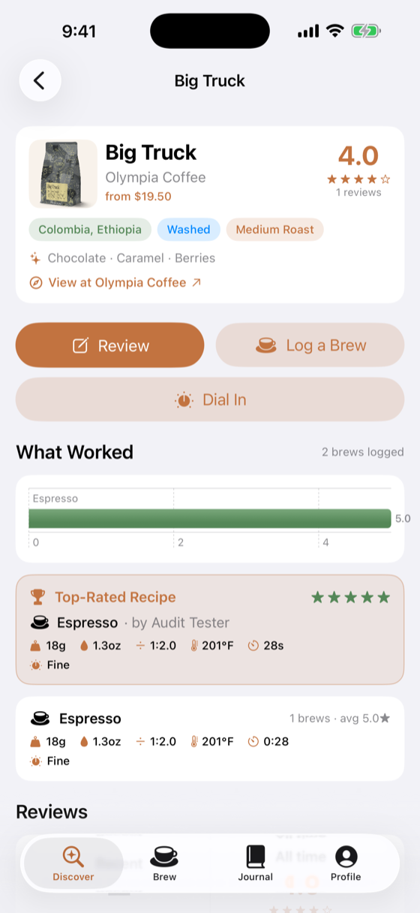
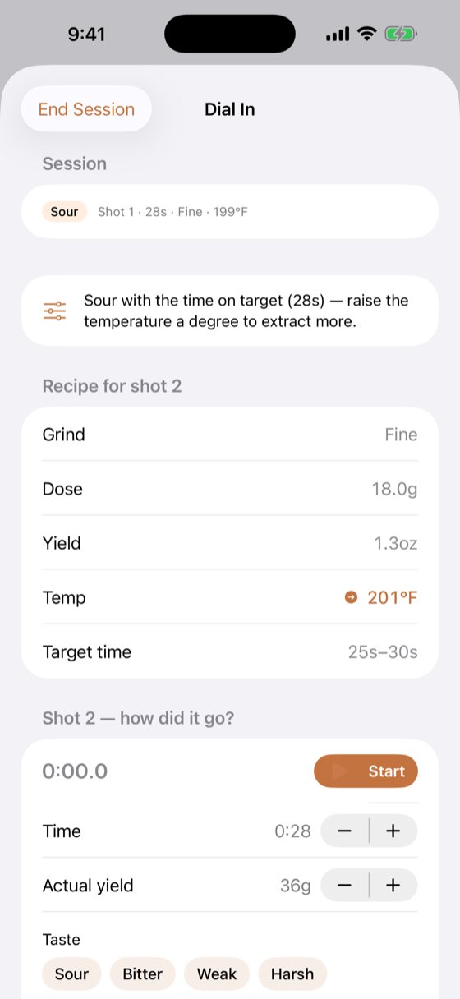
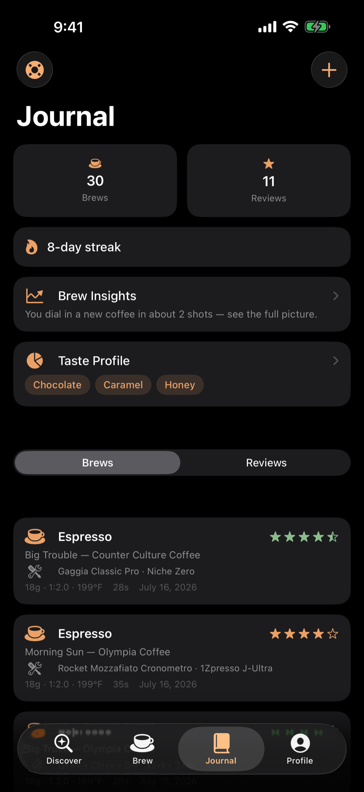
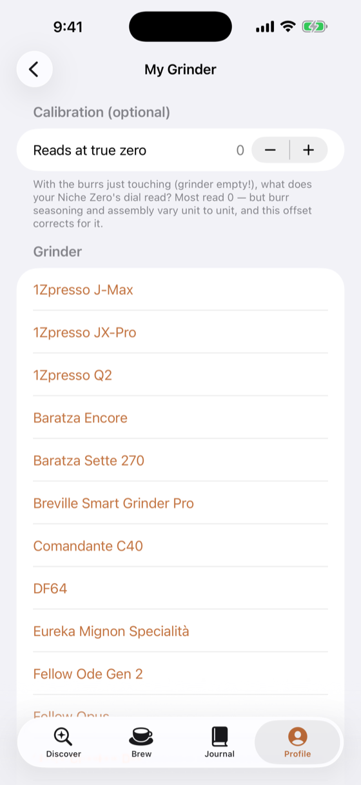

Espresso, pour-over & AeroPress · iPhone
Tell it how the shot tasted. It tells you exactly what to change next — in your grinder's own numbers.
In final preparation for the App Store. Check back soon.

Review the coffees you brew, dial them in with a coach, and learn what worked for everyone else.
Browse a catalog of real coffees from top roasters, rate the ones you brew, and keep your own tasting notes in one place.
Tell it how the shot tasted — it tells you what to change next: grind, dose, temperature, one variable at a time.
Calibrate once and every recipe is translated into your grinder's own dial numbers — not someone else's.
A full-screen shot timer with a Lock Screen Live Activity, and a journal of every brew so you never lose a dial-in.
Track bags and roast dates. Coaching adapts as beans age — because Tuesday's perfect recipe drifts by Sunday.
See what actually worked for other people brewing the same coffee — ratios, grinds, and recipes, not just star ratings.
No ads, no trackers, no analytics SDKs. Works fully offline, and your data is yours — export it anytime or delete your account for good.
Real screens — the dial-in coach, your brew journal, and grinder-native numbers.

Plain-language coaching that moves one variable at a time.

A journal of every shot, plus Brew Insights that show how fast you dial each coffee in.

Pick your model, set a zero offset, and get recipes in your own dial units.
Dial Coffee is in final preparation for the App Store. Check back soon — or bookmark this page.